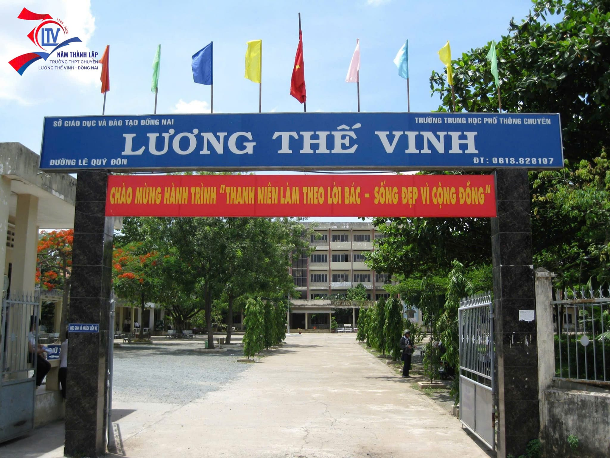
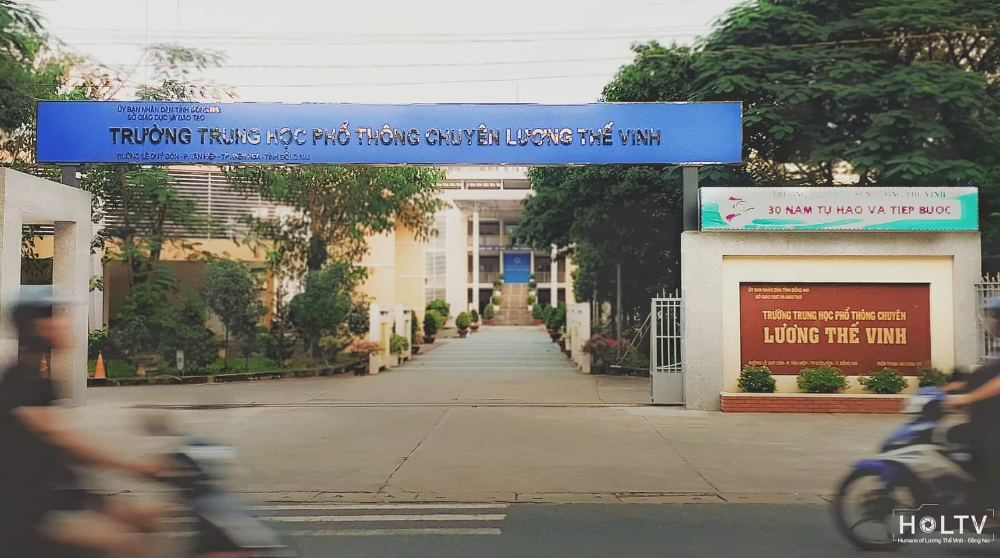
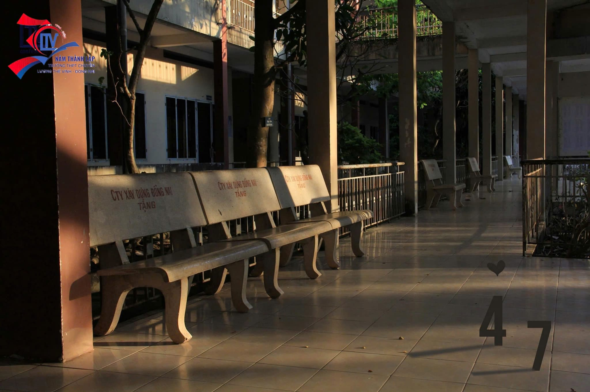
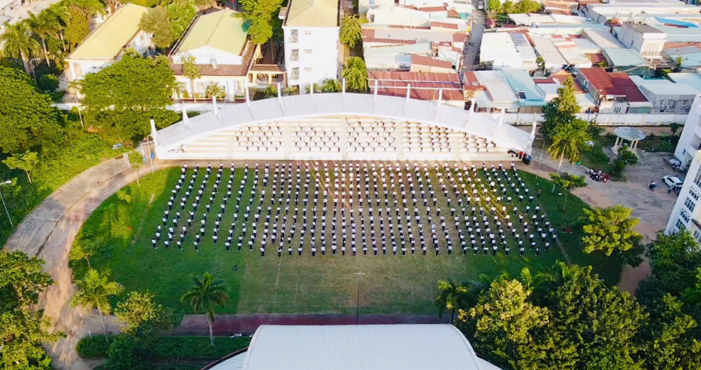

Tiếp nhận từ năm học 1997–1998
UBND tỉnh Đồng Nai phê duyệt
Hạng mục dự án nâng cấp
3 Tin học, 3 Lab, 5 Lý–Hóa–Sinh
Không Gian Khuôn Viên 2,7 Hécta Sư Phạm
Sau giai đoạn đầu (1994–1997) mượn cơ sở của Trường PTTH Ngô Quyền, năm học 1997–1998 ghi dấu mốc lịch sử khi nhà trường chính thức chuyển về cơ sở độc lập có diện tích 2,7 ha. Về mặt địa giới hành chính, cơ sở ban đầu được ghi nhận tại khu vực phường Tân Hiệp theo hồ sơ tiếp nhận năm 1997; hiện nay, địa chỉ hành chính chính thức của trường tọa lạc tại Số 2, đường Lê Quý Đôn, khu phố 6, phường Tam Hiệp, thành phố Đồng Nai.
Lễ khai giảng năm học 1997–1998 đồng thời là lễ khánh thành ngôi trường mới, mở ra thời kỳ phát triển vượt bậc với hệ thống khối phòng học, khu hiệu bộ và các công trình phụ trợ được quy hoạch đồng bộ trong một cảnh quan rợp bóng cây xanh.

Môi Trường Xanh & Tĩnh Lặng
Khuôn viên trường được bao bọc bởi những hàng cây cổ thụ và thảm cỏ xanh mướt, tạo nên bầu không khí trong lành, tĩnh lặng — không gian lý tưởng cho tư duy học thuật và các hoạt động nghiên cứu khoa học chuyên sâu.
Dự Án Cải Tạo, Nâng Cấp Quy Mô Gần 140 Tỷ Đồng
Nhằm đáp ứng yêu cầu bồi dưỡng nhân tài trong giai đoạn mới và đổi mới căn bản, toàn diện giáo dục, dự án cải tạo, nâng cấp Trường THPT Chuyên Lương Thế Vinh đã được Ủy ban Nhân dân tỉnh Đồng Nai phê duyệt từ tháng 4/2012.
Vào ngày 11/7/2014, Sở Giáo dục và Đào tạo tỉnh Đồng Nai đã long trọng tổ chức lễ khởi công dự án với tổng mức đầu tư gần 140 tỷ đồng. Dự án bổ sung và hiện đại hóa toàn diện hệ thống phòng học chuyên dụng, các phòng thí nghiệm hiện đại, khu hiệu bộ và thư viện đạt chuẩn quốc gia.


Hệ Thống Không Gian Học Tập & Thực Hành Chuyên Sâu
Theo hồ sơ dự án cải tạo nâng cấp, hệ thống hạ tầng được quy hoạch phân định rõ rệt giữa 39 phòng học lý thuyết tiêu chuẩn phục vụ các khối chuyên và 11 phòng chức năng, thực hành chuyên sâu (gồm 5 phòng thí nghiệm Lý – Hóa – Sinh, 3 phòng máy tính và 3 phòng Lab ngoại ngữ đa phương tiện):
Khối Phòng Học Tiêu Chuẩn
Quy mô gồm 39 phòng học được thiết kế rộng rãi, đảm bảo tiêu chuẩn ánh sáng tự nhiên, hệ thống thông gió và trang thiết bị hỗ trợ ứng dụng công nghệ thông tin trong dạy học.
- 39 phòng học phục vụ các khối chuyên
- Trang bị bảng tương tác và máy chiếu
Phòng Thí Nghiệm Lý – Hóa – Sinh
Hệ thống 5 phòng thí nghiệm chuyên dụng gồm 02 phòng Hóa học, 02 phòng Vật lý và 01 phòng Sinh học, được trang bị các dụng cụ thực hành và hóa chất đạt chuẩn an toàn giáo dục.
- 02 phòng thực nghiệm Hóa học
- 02 phòng thực nghiệm Vật lý
- 01 phòng thực nghiệm Sinh học
Phòng Máy Tính & Phòng Lab
Phục vụ các khối chuyên Tin học và ngoại ngữ với 3 phòng máy tính kết nối mạng tốc độ cao và 3 phòng Lab chuyên dụng hỗ trợ rèn luyện 4 kỹ năng ngôn ngữ chuẩn quốc tế.
- 03 phòng máy tính cấu hình cao
- 03 phòng Lab ngoại ngữ đa phương tiện
Thư Viện & Khu Hiệu Bộ
Thư viện nhà trường là trung tâm thông tin học thuật với phong phú đầu sách giáo khoa chuyên sâu, tài liệu nghiên cứu khoa học; kết nối trực tiếp với khối văn phòng hành chính và khu hiệu bộ.
- Kho sách chuyên khảo và đề thi HSG
- Khu hiệu bộ quản lý đồng bộ
Ghi chú về nguồn số liệu hạng mục
Các thông số về số lượng phòng học (39 phòng), phòng máy tính (3 phòng), phòng Lab (3 phòng) và phòng thí nghiệm (5 phòng) được ghi nhận theo hồ sơ dự án cải tạo, nâng cấp trường được phê duyệt năm 2012 và khởi công năm 2014. Hiện trạng sử dụng và nâng cấp bổ sung qua các năm học sẽ được nhà trường cập nhật khi có thống kê kiểm kê mới nhất.
Hội Trường Lớn & Không Gian Sinh Hoạt Tập Thể
Hội trường lớn là trung tâm tổ chức các sự kiện học thuật trọng đại, các buổi lễ khai giảng, bế giảng, đại hội Đoàn trường và các hội thảo chuyên đề khoa học cấp tỉnh.
Hội Trường Sư Phạm Đa Năng
Với sức chứa lớn cùng hệ thống âm thanh, ánh sáng hoàn chỉnh, hội trường là nơi lưu giữ những khoảnh khắc vinh danh các thế hệ học sinh đoạt giải quốc gia và các hoạt động văn hóa nghệ thuật của trường.

Sân Vận Động & Không Gian Hoạt Động Ngoài Trời
Nhà trường dành diện tích lớn cho các công trình thể dục thể thao ngoài trời, bao gồm sân bóng đá cỏ nhân tạo, khu sân bóng rổ, cầu lông và đường chạy rèn luyện thể lực, phục vụ giải đấu bóng đá truyền thống và các hội thao thanh niên thường niên.

Thư Viện Ảnh Toàn Cảnh Khuôn Viên Sư Phạm
Những góc nhìn chân thực, đa chiều về không gian kiến trúc, dự án nâng cấp 140 tỷ, hệ thống phòng ban và các khu liên hợp thể thao tại ngôi trường chuyên của tỉnh Đồng Nai:

